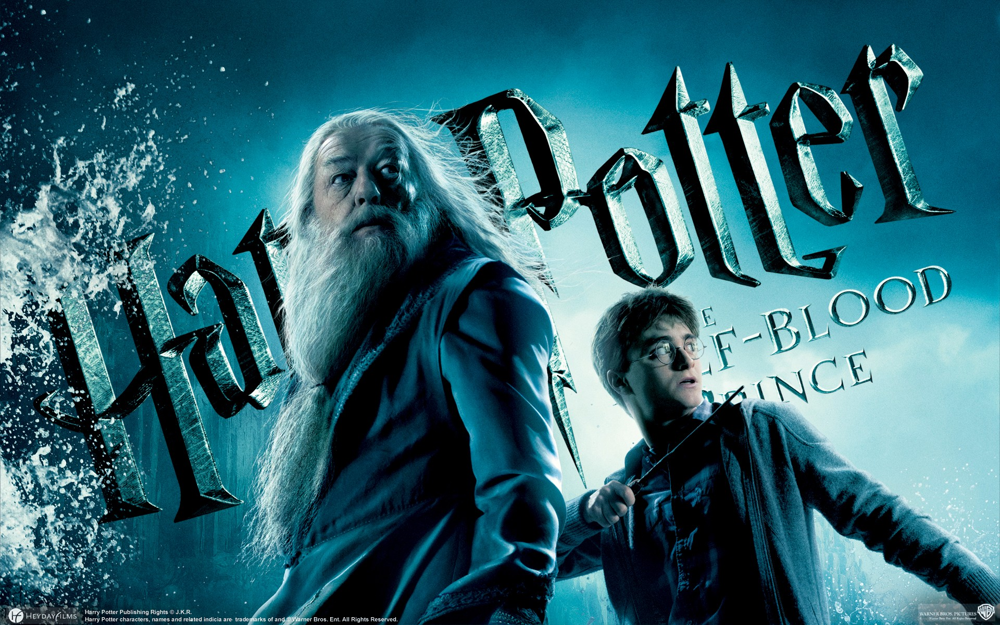

harry potter e o enigma do príncipe
sinópse
No sexto ano de Harry em Hogwarts, Lord Voldemort e seus Comensais da Morte estão criando o terror nos mundos bruxo e trouxa. Dumbledore convence seu velho amigo Horácio Slughorn para retornar a Hogwarts como professor de poções após Harry encontrar um estranho livro escolar. Draco Malfoy se esforça para realizar uma ação destinada por Voldemort, enquanto Dumbledore e Harry secretamente trabalham juntos a fim de descobrir o método para destruir o Lorde das Trevas uma vez por todas.
lançamento:2005 - genero:Fantasia/Aventura - 88% gostaram desse filme - esta disponivel agora no HBO MAX
Elenco


Gary Oldman/Sirius Black-----David Thewlis/Remo Lupin-----Pam Ferris/Guida Dursley